| A | Tukwila International Boulevard Station | Federal Way Transit Center | 1/11/24 19:46 | 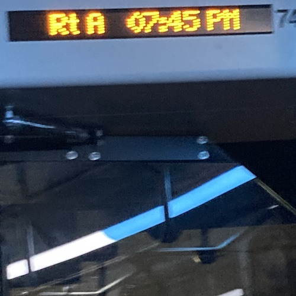 | |
| B | Redmond | Bellevue | 11/14/23 16:01 | 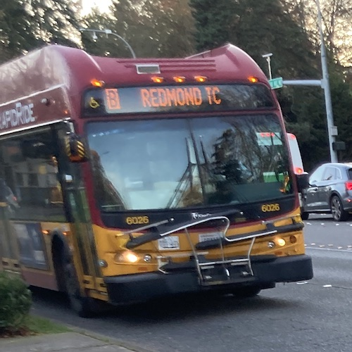 | |
| C | South Lake Union | Westwood Village | 10/11/23 16:38 | 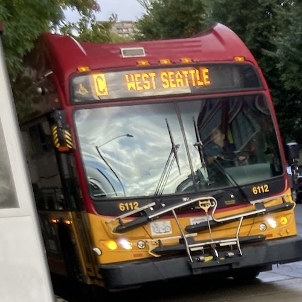 | |
| D | Crown Hill | Downtown Seattle | 10/11/23 17:12 | | |
| E | Aurora Village Transit Center | Downtown Seattle | 10/2/23 16:27 | 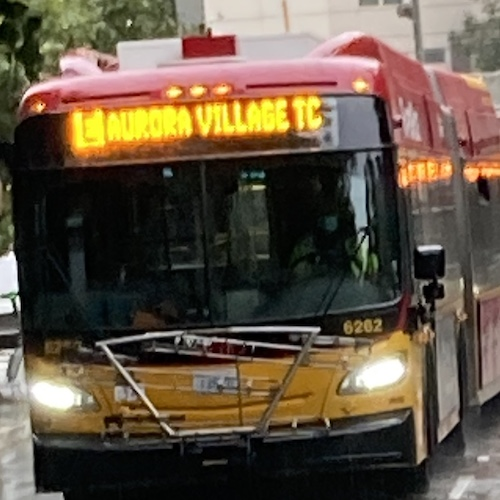 | |
| F | Burien Transit Center | The Landing | 1/4/24 20:25 | 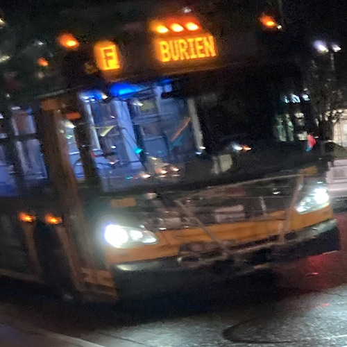 | |
| G | Madison Valley | Downtown Seattle | Incomplete | ||
| H | Burien | Downtown Seattle | Replaced | 1/16/24 13:52 | |
| -330 | Discontinued | 9/28/23 16:15 | 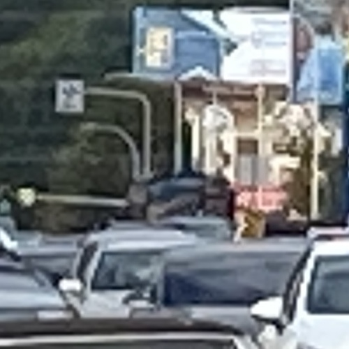 | ||
| 1 | Kinnear | Downtown Seattle | 10/2/23 16:07 | | |
| 2 | West Queen Anne | Madrona Park | 10/11/23 17:40 | 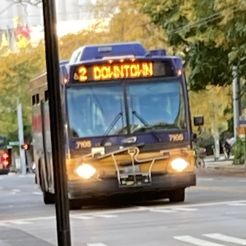 | |
| 3 | Summit | Madrona | 10/16/23 16:29 | 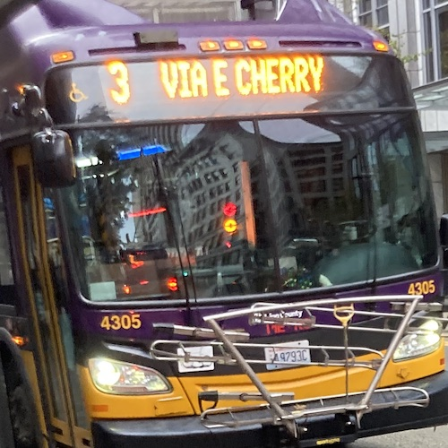 | |
| 4 | Seattle Pacific University | Judkins Park | 10/11/23 18:16 | 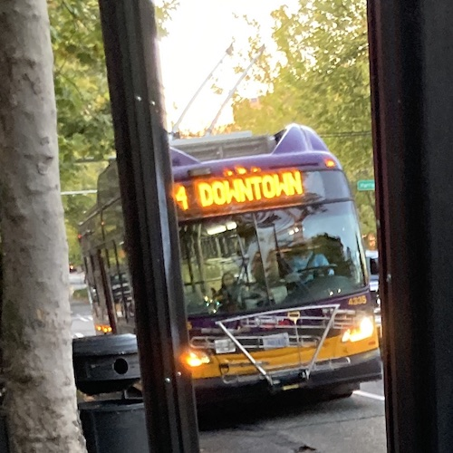 | |
| 5 | Shoreline Community College | Downtown Seattle | 10/11/23 18:50 | 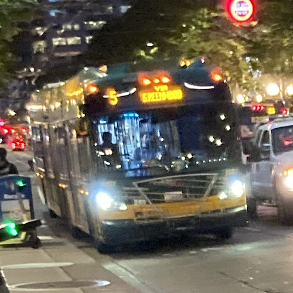 | |
| 7 | Prentice St | Downtown Seattle | 10/2/23 16:08 | | |
| 8 | Seattle Center | Mount Baker | 10/11/23 16:54 | 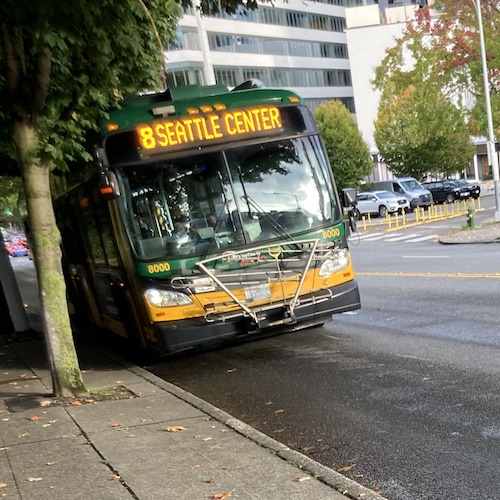 | |
| 9 | Rainier Beach | Broadway | 10/16/23 15:58 | 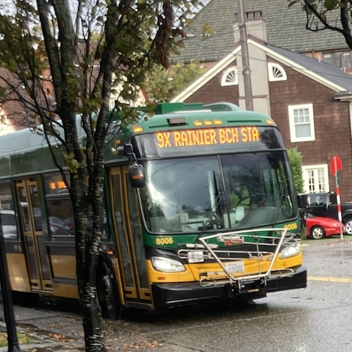 | |
| 10 | Capitol Hill | Downtown Seattle | 10/2/23 16:57 | 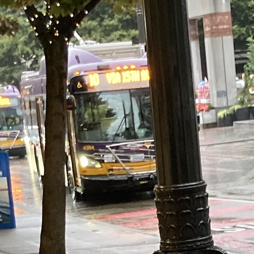 | |
| 11 | Madison Park | Downtown Seattle | 10/11/23 19:09 | 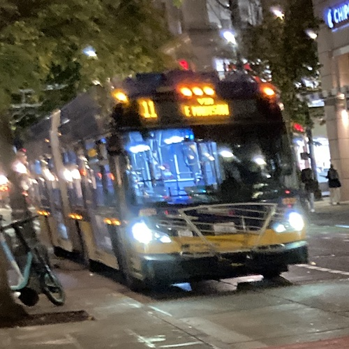 | |
| 12 | Interlaken Park | Downtown Seattle | 10/16/23 16:16 | 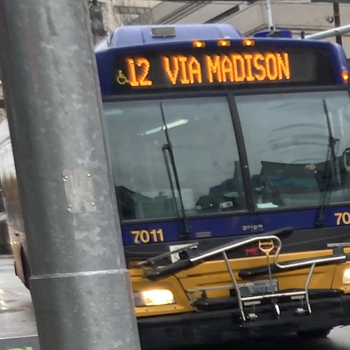 | |
| 13 | Seattle Pacific University | Downtown Seattle | 10/11/23 17:02 | 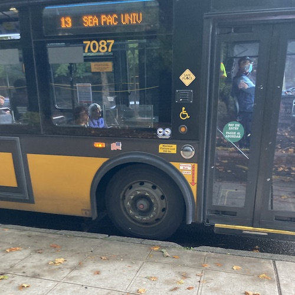 | |
| 14 | Mount Baker | Downtown Seattle | 10/2/23 15:56 | | |
| 17 | Loyal Heights | Downtown Seattle | 10/11/23 17:58 | 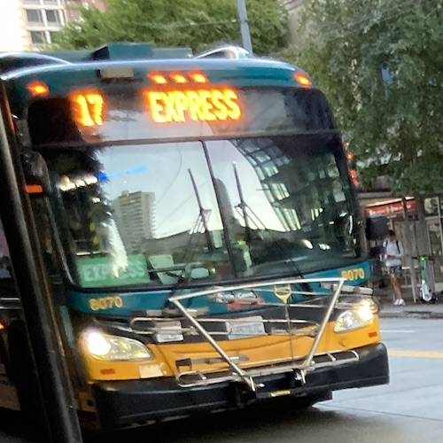 | |
| 20 | Discontinued | 9/28/23 15:47 | 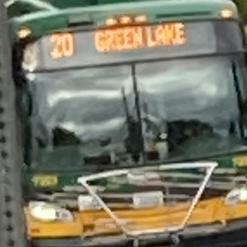 | ||
| 21 | Arbor Heights | Downtown Seattle | 10/11/23 18:26 | 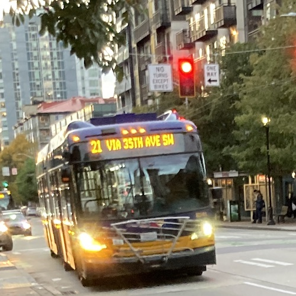 | |
| 22 | Arbor Heights | Alaska Junction | 10/16/23 19:39 | 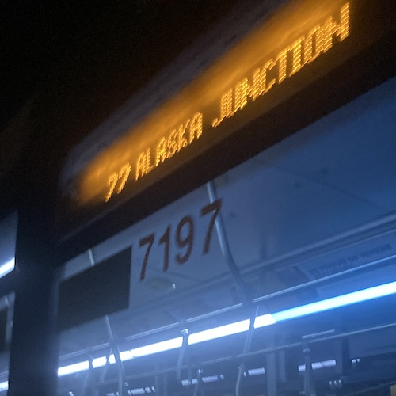 | |
| 24 | Magnolia | Downtown Seattle | 10/2/23 16:40 | 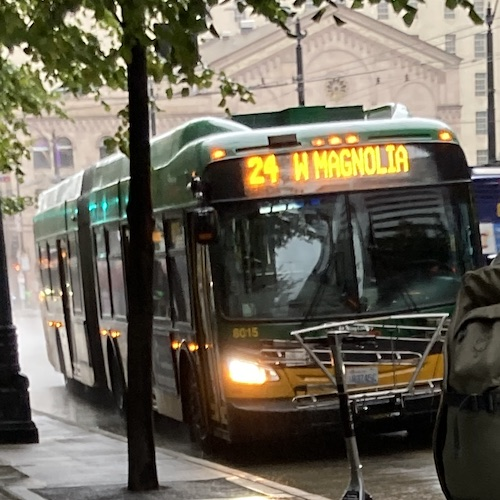 | |
| 27 | Colman Park | Downtown Seattle | 10/16/23 16:36 | 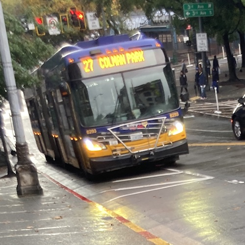 | |
| 28 | Broadview | Downtown Seattle | 10/2/23 17:28 | 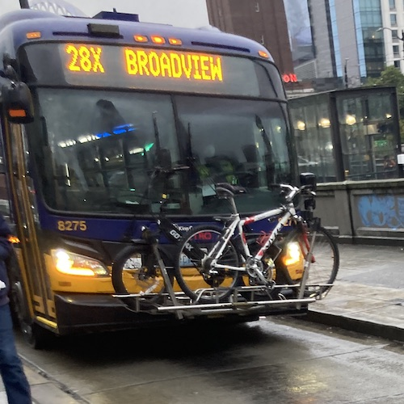 | |
| 31 | Children's Hospital | Magnolia | 9/27/23 12:04 | 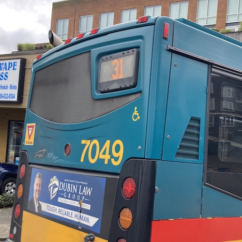 | |
| 32 | Children's Hospital | Seattle Center | 9/28/23 13:40 | 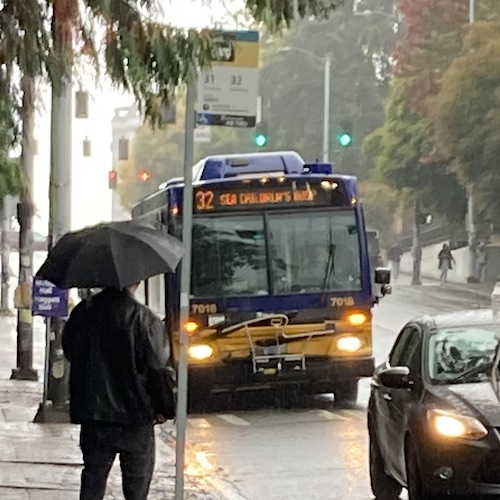 | |
| 33 | Discovery Park | Downtown Seattle | 10/11/23 17:18 | 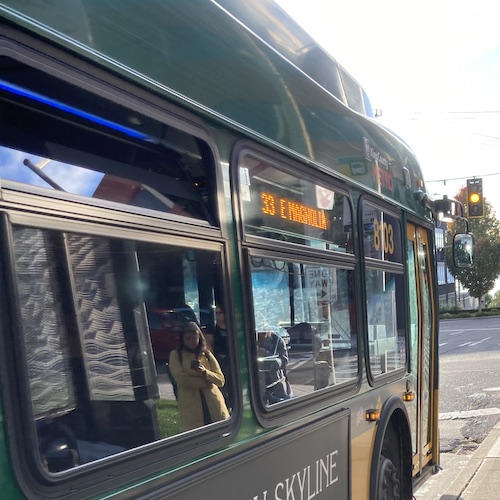 | |
| 36 | Othello Station | Downtown Seattle | 10/16/23 17:08 | | |
| 40 | Northgate | Downtown Seattle | 10/11/23 16:48 | 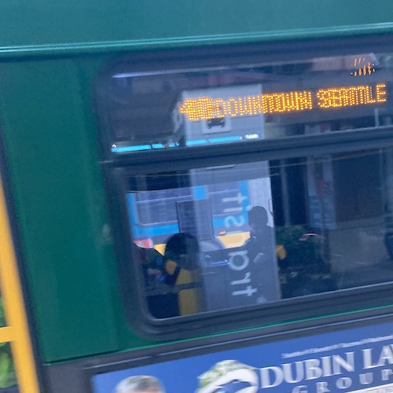 | |
| 43 | University District | Downtown Seattle | 10/11/23 19:32 | 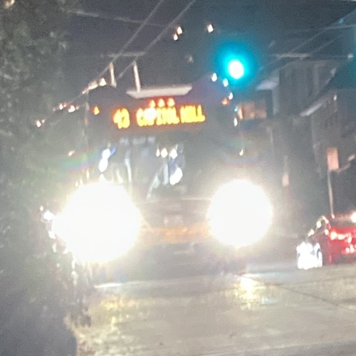 | |
| 44 | Ballard | UW Station | 10/2/23 19:18 | | |
| 45 | Loyal Heights | Seattle Children's Hospital | 9/29/23 12:24 | 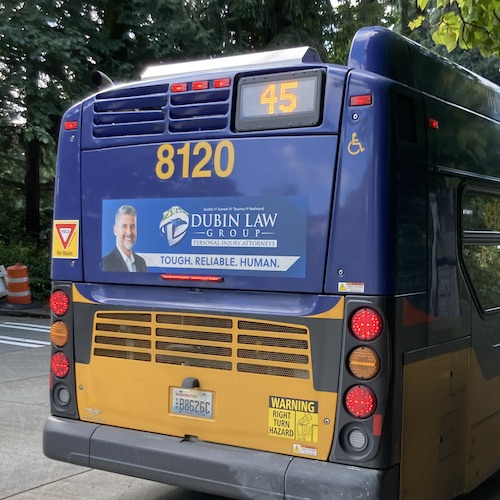 | |
| 48 | University District | Mount Baker | 10/2/23 15:56 | 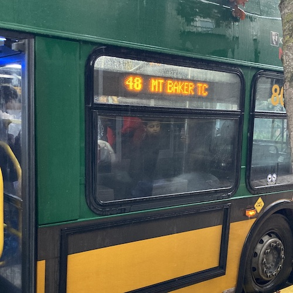 | |
| 49 | University District | Downtown Seattle | 10/1/23 22:09 | | |
| 50 | Alki | Othello Station | 10/16/23 18:04 | 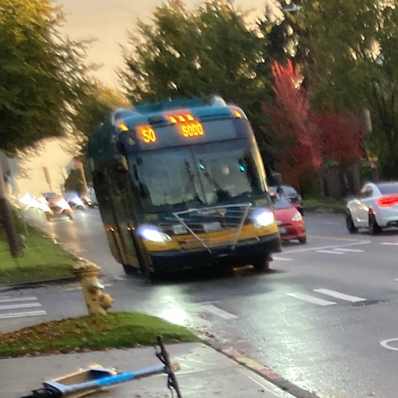 | |
| 56 | Alki | Downtown Seattle | 10/16/23 18:57 | | |
| 57 | Alaska Junction | Downtown Seattle | 10/2/23 16:21 | 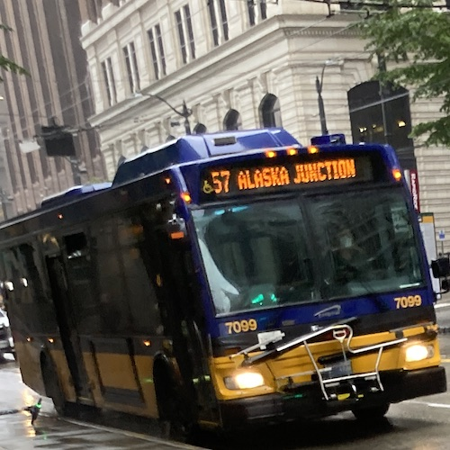 | |
| 60 | Westwood Village | Broadway | 10/11/23 19:44 | 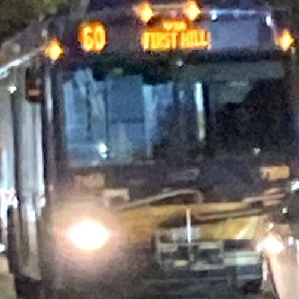 | |
| 61 | Lake City | Greenwood | Incomplete | ||
| 62 | Sand Point | Downtown Seattle | 9/28/23 15:07 | 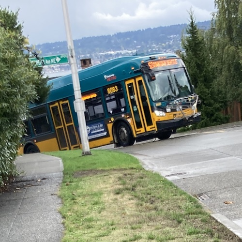 | |
| 65 | Jackson Park | University District | 10/1/23 17:18 | | |
| 67 | Northgate | Children's Hospital | 9/29/23 13:09 | 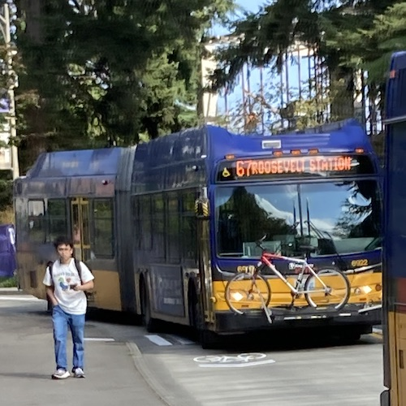 | |
| 70 | University District | Downtown Seattle | 10/2/23 19:12 | | |
| 73 | Discontinued | 10/12/23 14:08 | 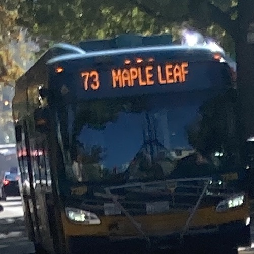 | ||
| 75 | Northgate | University District | 9/28/23 13:53 | 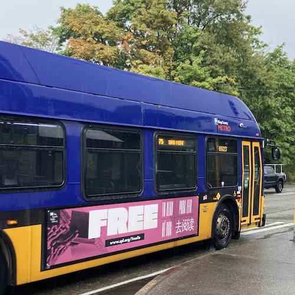 | |
| 79 | Green Lake P&R | University District | 9/28/23 14:50 | 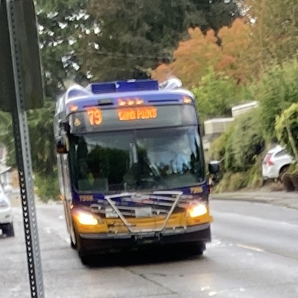 | |
| 90 | Downtown Seattle | Capitol Hill | Incomplete | ||
| 97 | Discontinued | 1/13/24 11:10 | 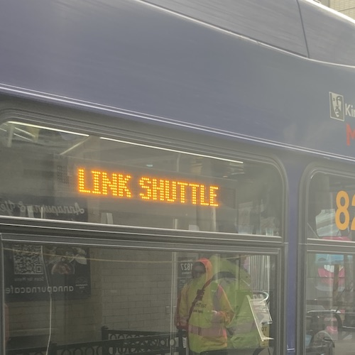 | ||
| 101 | Renton | Downtown Seattle | 1/4/24 18:15 | | |
| 102 | Fairwood | Downtown Seattle | 11/8/23 16:49 | 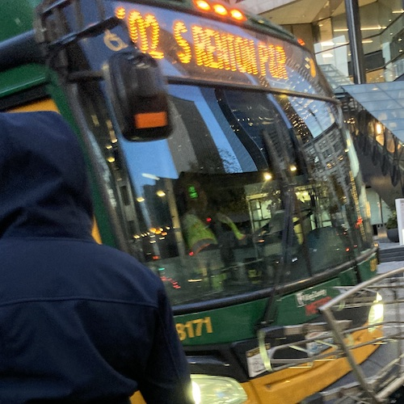 | |
| 105 | Renton Highlands | Renton | 1/4/24 17:59 | | |
| 106 | Renton | Chinatown/International District | 10/16/23 16:49 | 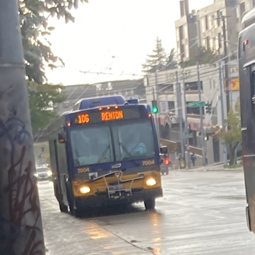 | |
| 107 | Beacon Hill | Renton | 10/16/23 17:47 | 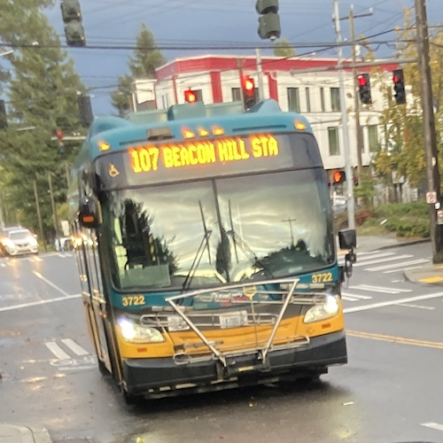 | |
| 111 | Lake Kathleen | Downtown Seattle | 1/4/24 17:34 | | |
| 113 | Shorewood | Downtown Seattle | 1/11/24 17:02 | 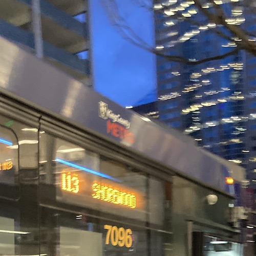 | |
| 118 | Vashon Island | Tahlequah | 1/30/24 16:04 | 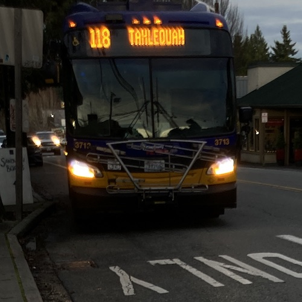 | |
| 119 | Vashon Island | Dockton | 1/30/24 15:23 | 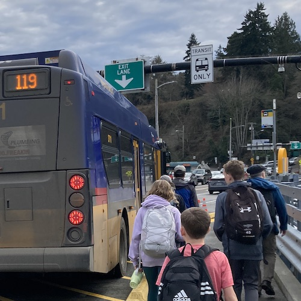 | |
| 124 | Tukwila International Blvd Station | Downtown Seattle | 10/11/23 17:43 | 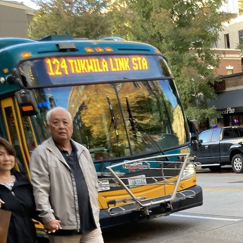 | |
| 125 | Westwood Village | Downtown Seattle | 11/8/23 16:25 | 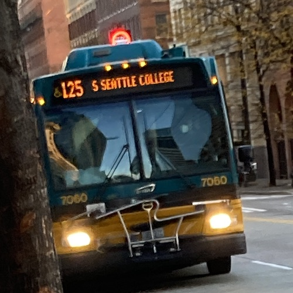 | |
| 128 | Southcenter | Admiral District | 10/16/23 19:21 | | |
| 131 | Burien | Downtown Seattle | 1/11/24 17:35 | | |
| 132 | Burien | Downtown Seattle | Replaced | 1/16/24 16:30 | 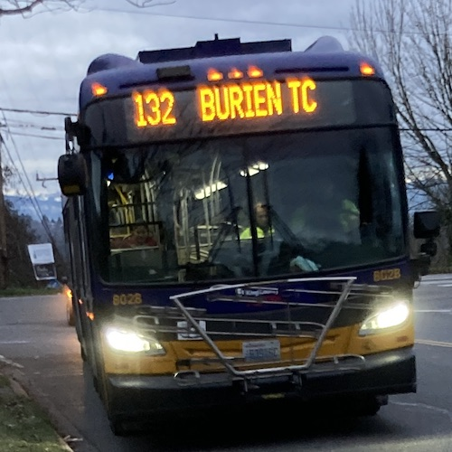 |
| 148 | Fairwood | Renton | 1/4/24 20:18 | | |
| 150 | Kent | Downtown Seattle | 11/8/23 16:34 | 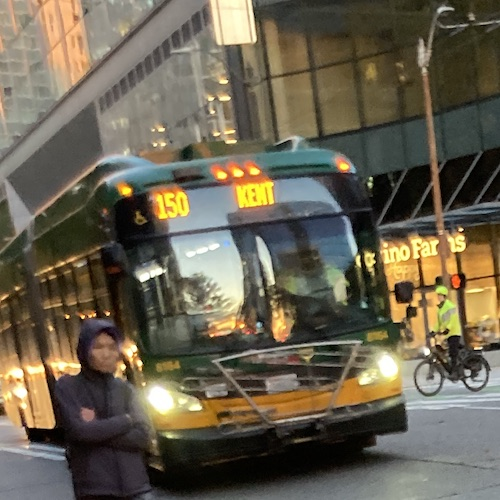 | |
| 153 | Kent | Renton Transit Center | 1/4/24 19:30 | 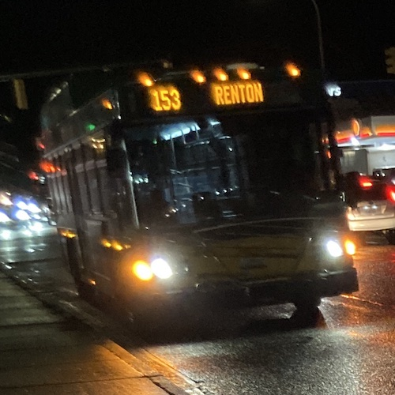 | |
| 156 | Highline College | Southcenter | 1/11/24 19:06 | | |
| 160 | Auburn | Renton | 1/4/24 18:36 | ||
| 161 | Kent | Burien | 1/16/24 17:02 | | |
| 162 | Lake Meridian | Downtown Seattle | 1/23/24 15:38 | | |
| 165 | Green River College | Burien | 1/11/24 18:28 | ||
| 168 | Maple Valley | Kent Station | 1/23/24 17:27 | | |
| 177 | Federal Way | Downtown Seattle | 2/1/24 15:19 | ||
| 181 | Twin Lakes P&R | Green River College | 1/23/24 18:45 | ||
| 182 | Northeast Tacoma | Federal Way Transit Center | 1/23/24 19:28 | ||
| 183 | Federal Way | Kent | 1/23/24 17:44 | ||
| 184 | SE Auburn | Auburn Station | 2/1/24 17:13 | | |
| 187 | Twin Lakes | Federal Way Transit Center | 1/23/24 20:03 | | |
| 193 | Federal Way | First Hill | 1/23/24 18:26 | ||
| 204 | Mercer Island | Mercer Island | DART | 12/14/23 17:26 | |
| 208 | North Bend | Issaquah | 12/12/23 18:22 | ||
| 212 | Eastgate P&R | Downtown Seattle | 12/12/23 17:05 | | |
| 218 | Issaquah | Downtown Seattle | 12/12/23 17:26 | | |
| 221 | Education Hill | Eastgate P&R | 12/6/23 17:27 | ||
| 224 | Redmond | Duvall | DART | 12/6/23 19:21 | |
| 225 | Kenmore | Overlake | 11/14/23 16:15 | | |
| 226 | Bellevue | Eastgate P&R | 12/6/23 16:50 | | |
| 230 | Kirkland | Bothell | 11/28/23 16:55 | ||
| 231 | Kirkland | Woodinville | 11/28/23 16:41 | ||
| 239 | Kirkland | Bothell | 11/28/23 17:16 | | |
| 240 | Bellevue | Renton | 12/12/23 16:09 | ||
| 241 | Bellevue | Eastgate | 12/12/23 15:21 | ||
| 245 | Kirkland | Factoria | 11/14/23 16:27 | ||
| 246 | Clyde Hill | Eastgate P&R | 12/12/23 14:54 | | |
| 249 | Overlake | Bellevue | 12/6/23 16:28 | ||
| 250 | Avondale | Bellevue | 11/14/23 16:10 | ||
| 255 | Totem Lake | University District | 10/2/23 15:15 | ||
| 257 | Kingsgate | Downtown Seattle | 11/28/23 16:18 | | |
| 269 | Issaquah | Overlake | 12/6/23 17:41 | | |
| 271 | Issaquah | University District | 11/14/23 17:10 | ||
| 302 | Discontinued | 11/8/23 17:17 | | ||
| 303 | Aurora Village Transit Center | First Hill | 11/13/23 16:50 | ||
| 311 | Woodinville | Downtown Seattle | 11/14/23 15:20 | ||
| 322 | Kenmore | First Hill | 10/2/23 17:50 | | |
| 330 | Discontinued | 11/13/23 19:18 | | ||
| 331 | Kenmore | Shoreline | 11/13/23 18:15 | ||
| 333 | Mountlake Terrace Station | Shoreline South/148th St Station | Incomplete | ||
| 345 | Shoreline Community College | Northgate | 11/13/23 17:17 | ||
| 346 | Aurora Village | Northgate | 11/13/23 17:05 | ||
| 347 | Discontinued | 11/13/23 17:33 | | ||
| 348 | Richmond Beach | Northgate | 11/13/23 19:27 | | |
| 365 | Shoreline North/185th St Station | Northgate Station | Incomplete | ||
| 372 | Bothell | University District | 9/28/23 17:00 | ||
| 510 | Everett | Seattle | 12/4/23 18:14 | ||
| 512 | Everett | Lynnwood | 12/4/23 17:29 | ||
| 513 | Seaway TC | Lynnwood | 12/4/23 17:52 | ||
| 515 | Lynnwood | Seattle | Incomplete | ||
| 522 | Woodinville | Roosevelt Station | 9/28/23 15:31 | ||
| 532 | Everett | Bellevue | 11/28/23 15:56 | | |
| 535 | Lynnwood | Bellevue | 12/4/23 16:26 | | |
| 542 | Redmond | University District | 9/29/23 13:39 | ||
| 545 | Redmond | Seattle | 11/28/23 18:31 | | |
| 550 | Bellevue | Seattle | 10/2/23 17:07 | ||
| 554 | Bellevue | Northgate Station | 10/2/23 17:16 | ||
| 556 | Issaquah | U District | 11/28/23 15:32 | ||
| 560 | Bellevue | West Seattle | 1/4/24 17:11 | ||
| 566 | Auburn | Redmond | 1/9/24 16:28 | ||
| 574 | Lakewood | SeaTac Airport | 1/16/24 17:48 | ||
| 577 | Federal Way | Seattle | 2/8/24 14:49 | ||
| 578 | Puyallup | Seattle | 1/23/24 20:47 | ||
| 580 | Discontinued | 2/8/24 16:46 | |||
| 586 | Tacoma | University District | 10/2/23 15:19 | ||
| 590 | Tacoma | Seattle | 1/18/24 16:47 | ||
| 592 | DuPont | Seattle | 1/18/24 17:17 | | |
| 594 | Lakewood | Seattle | 11/8/23 17:00 | ||
| 595 | Gig Harbor | Seattle | 1/18/24 17:23 | ||
| 596 | Bonney Lake | Sumner | 2/19/24 15:11 | ||
| 630 | South Mercer Island | Downtown Seattle | DART | 12/14/23 18:15 | |
| 631 | Burien Transit Center | Gregory Heights | DART | 1/16/24 16:41 | |
| 635 | Angle Lake Station | Des Moines Marina District | DART | 1/16/24 18:40 | |
| 773 | Alaska Junction | Seacrest Park | DART | 1/16/24 14:41 | |
| 775 | Seacrest Park | Alki | 1/16/24 14:47 | ||
| 893 | Forbes Creek | Rose Hill | Incomplete | ||
| 893 | Delisted | 1/4/24 15:51 | |||
| 895 | Overlake | NW Lake Sammamish | Incomplete | ||
| 895 | Delisted | 1/9/24 15:48 | |||
| 901 | Federal Way | Mirror Lake | DART | 1/23/24 20:15 | |
| 903 | Federal Way | Twin Lakes | DART | 1/23/24 19:18 | |
| 906 | Fairwood | Tukwila Station | DART | 1/4/24 19:10 | |
| 907 | Black Diamond | Renton | DART | 1/19/24 9:52 | |
| 914 | Kent | East Hill | DART | 1/23/24 16:46 | |
| 915 | Auburn | Enumclaw | DART | 2/1/24 17:41 | |
| 917 | Auburn | Pacific | DART | 2/1/24 16:45 | |
| 930 | Kingsgate P&R | Redmond Town Center | DART | 11/28/23 18:29 | |
| 981 | Mercer Island P&R | Totem Lake | 2/7/24 18:04 | | |
| 982 | Bear Creek P&R | Haller Lake | 12/6/23 16:11 | | |
| 984 | Discontinued | 1/26/24 18:03 | |||
| 986 | Kirkland | Haller Lake | 12/14/23 16:08 | ||
| 987 | South Park | Haller Lake | 1/24/24 16:04 | ||
| 988 | Madrona | Haller Lake | 1/5/24 16:02 | ||
| 989 | Factoria | Haller Lake | 12/12/23 16:20 | ||
| 994 | Discontinued | 1/8/24 16:09 |
Only current King County Metro and Sound Transit routes are included (not suspended routes).
Photographs of routes with Replaced tag have been replaced due to insufficient image legibility.
Routes with Discontinued tag have been discontinued since their completion.
Routes with Delisted tag remain operational but are absent from public transit agency websites (possibly intentionally).